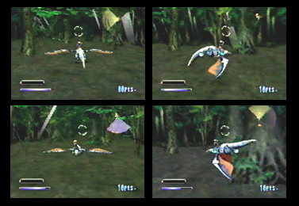

What's a Rail Shooter? The first two games in the Panzer Dragoon series: Panzer Dragoon and Panzer Dragoon 2 Zwei, were both rail shooters. You may have never played these games and have no idea what a rail shooter is. You can think of it like moving on a continuous path, unable to stop. You play as an Ancient Age dragon, along with a rider atop its back. You can move the dragon as well as a cursor, located in the middle of the screen, up, down, left or right. This action is done by pressing the directional pad (analog stick for the analog contrller). On the top right of the screen, you are given an enemy radar. The radar indicates enemies in range as points on the radar screen. The glowing area indicates the area you're currently facing.You can also turn a full 360 degrees to 4 different directions: front, left, rear and right, by pushing the top L and R buttons on the Saturn controller (back L and R buttons for the analog controller). When facing any of these 4 directions, if the A, B, or C button is held down, you can move the cursor over multiple enemies, locking-on to different points on their bodies. Once the A, B, or C button is released, the dragon will fire homing lasers towards the points you've selected, completely destroying the enemy. The rider atop the dragon's back, also serves a purpose. Within the riders hand, is an Ancient Age gun. When the player presses the A, B or C button rapidly, a series of shots can be fired. These gun shots will hit wherever you move the cursor to. Throughout each level, you will have to take down hordes of enemies and at the end of each level, you will have to fight a boss. Bosses aren't as easy as the normal enemies and give the player more of a challenge. That's basically all there is to these amazing games. A steep learning curve isn't required. These games are fairly easy to pick up and a joy to play. |
Panzer Dragoon game cover. |
Panzer Dragoon back cover. |
Panzer Dragoon 2 Zwei game cover. |
Panzer Dragoon 2 Zwei back cover. |
Panzer Dragoon's Dragon and rider. |
Panzer Dragoon 2 Zwei's Dragon and rider. |
In Panzer Dragoon you can move the lock-on cursor up, down, left and right. |
In Panzer Dragoon 2 Zwei, the second game in the series, the cursors design might have changed, but it's used in the very same way as Panzer Dragoon's cursor. |
This is your enemy radar in Panzer Dragoon. It indicates enemies in range as points on the radar screen. The glowing area indicates the direction you're currently facing. |
The same goes for Panzer Dragoon 2 Zwei's enemy radar. |
You can also turn 360 degrees to 4 different directions: front, left, rear and right. Notice the enemy radar, to the upper right of each pic, The glowing area indicates the direction you're currently facing. |
 In Panzer Dragoon 2 Zwei, you can also turn 360 degrees to 4 different directions. |
When facing any of the 4 directions, the cursor is used to drag over and lock-on to multiple enemies, as seen here in Panzer Dragoon. |
Once you let go of the button, the dragon will fire a series of homing lasers intended to take serious damage to the enemies you've selected. |
Panzer Dragoon 2 Zwie's lock-on system is exactly the same as Panzer Dragoons. |
Once you have locked-on to multiple enemies or points on their bodies, let go of the button and the dragon will shoot out a series of powerful homing lasers. |
The rider in Panzer Dragoon also serves a purpose. Also, in any of the 4 directions, he can fire his gun when the A, B, or C button is rapidly pressed. |
In Panzer Dragoon 2 Zwei, the rider can also fire his gun at any enemy you choose. |
At the end of each stage you will have to fight a boss battle, as seen here in Panzer Dragoon. |
Every boss is different and unique. The dragon and its rider in Panzer Dragoon 2 Zwei, have to fight a horrible monster from the Ancient Age. |


How the Gameplay has Changed with the Advent of Panzer Dragoon Saga